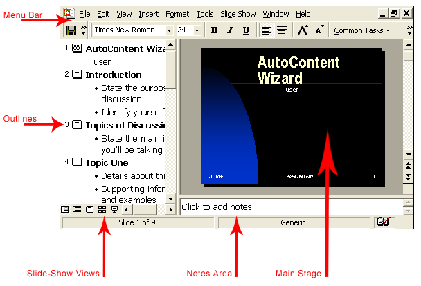
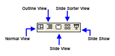

Free
powerpoint
Tutorials
|
Free
powerpoint
Tutorials
|
|
 home home |
Stay at Home and Learn | ||||
The PowerPoint Software |
|||||
|
Part 1, 2, 3, 4, 5, 6, 7, 8, 9, 10, 11
The PowerPoint software can be a bit daunting when you're new to it, and it's difficult to know just what everything does, and what you're looking at. In this section, we'll explain the various areas you need to get to grips with. Let's start with a picture. 
The image above shows what your presentation should look like after the AutoContent Wizard has finished. The arrows point to the main areas of PowerPoint. Menu Bar Outlines Slide Show Views  Later versions of PowerPoint have two of these icons missing. Here's what your Slide Show Views look like: The missing two are Outline View and Slide View. But you can see both of these on the left hand side, in PowerPoint 2003. The best way to see what these icons do is to click on them. Watch what happens to your screen when you click one of the above icons. Clicking the Slide Show icon is the same as pressing the F5 key on your keyboard, or selecting Slide Show > View Show from the menu bar. To get back to the main view, click the icon for Normal View.
Main Stage
Now that you've had a look at the main areas of the PowerPoint software, we'll make a start with our first presentation.
|
||||